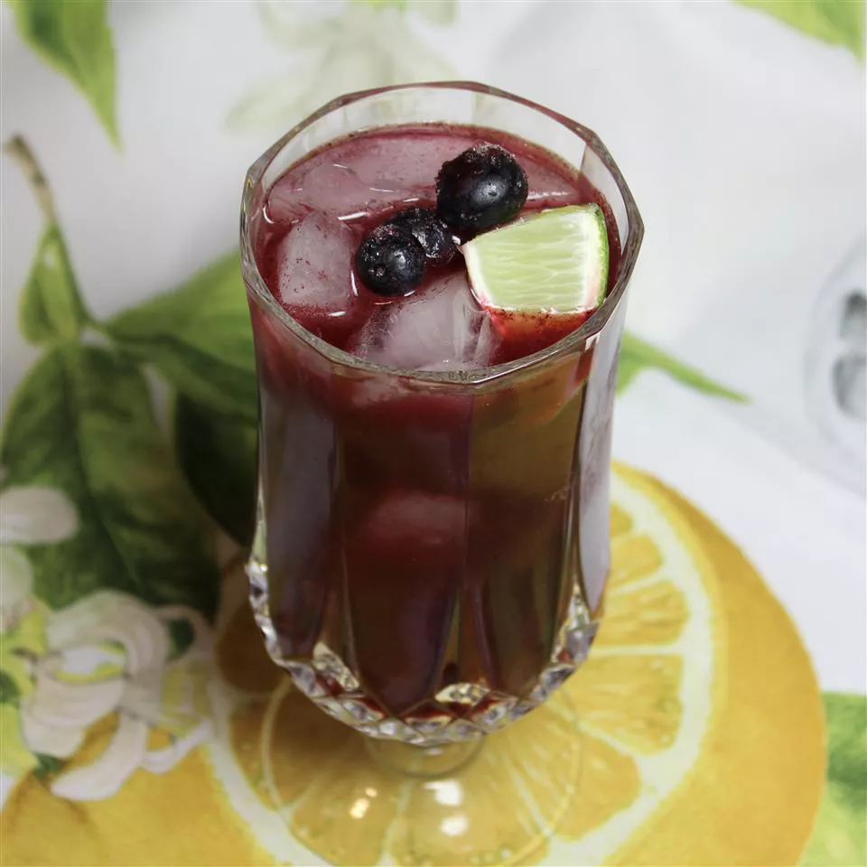

Blueberry Limeade
Description

Refreshing blueberry limeade is prepared with fresh blueberries, lime
juice, and sugar. Serve cold over ice. Stir well before serving.
Ingredient
- 2 cups fresh blueberries
- ½ cup white sugar, or to taste
- ⅓ cup freshly squeezed lime juice
- 6 cups water, or more as needed
Steps
-
Blend blueberries, sugar, lime juice, and 1 cup water together in a
blender; pour into a pitcher. Add remaining water and stir.